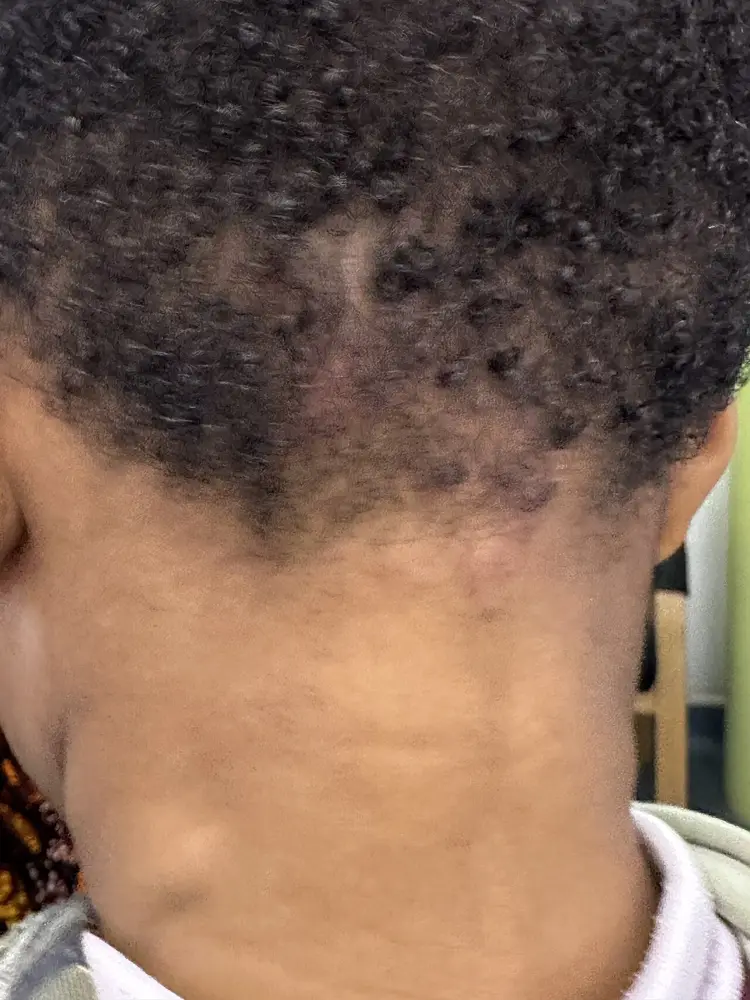
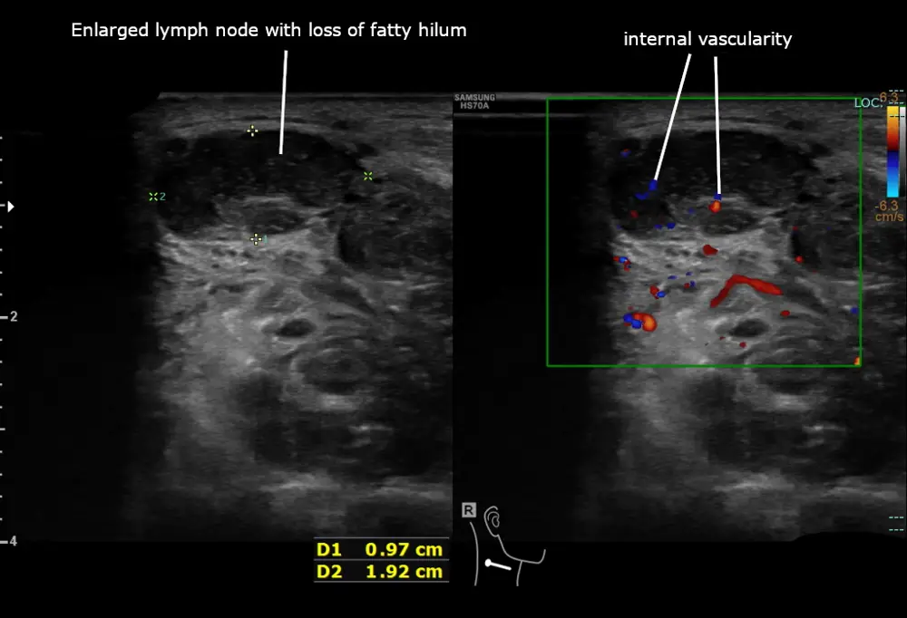

Une adénopathieGanglion lymphatique palpable de plus de 1 cm de diamètre ; c'est un signe, non un diagnostic. est un ganglion palpable de plus de 1 cm1. Elle traduit une réaction, une infiltration ou une prolifération du tissu lymphoïde1. La tuméfaction est toute masse palpable : ganglion, glande, kyste, lipome ou tumeur d'organe. Localisée, l'adénopathie touche une région ; généralisée, elle touche deux régions non contiguës ou plus.
Où se situe le problème ? Du général au particulierSymptômes et signesCIM-10, R00–R99
Ganglions lymphatiques augmentés de volume : la catégorie R59 les rassemble.
Fièvre d'origine inconnue (R50)Cette catégorie de la CIM-10 comprend les fièvres sans cause identifiée1.
Céphalée (R51)Cette catégorie de la CIM-10 comprend les maux de tête comme symptôme1.
Douleur non classée ailleurs (R52)Cette catégorie de la CIM-10 comprend les douleurs sans siège précisé1.
Malaise et fatigue (R53)Cette catégorie de la CIM-10 comprend la fatigue et le malaise général1.
Syncope et collapsus (R55)Cette catégorie de la CIM-10 comprend les pertes de connaissance brèves1.
Œdème non classé ailleurs (R60)Cette catégorie de la CIM-10 comprend les œdèmes dont la cause n'est pas précisée1.
Ganglions lymphatiques augmentés de volumeCIM-10, R59
G2 Tuméfaction, tumeur, adénopathie : cette situation de départ est celle du cours.
G1 Transpiration anormaleCette situation de départ de PROFILES 2023 concerne la sueur excessive ou absente1.
G8 HypothermieCette situation de départ de PROFILES 2023 concerne la température centrale abaissée1.
G2 Tuméfaction, tumeur, adénopathiePROFILES 2023
L'adénopathie est localisée (R59.0) ou généralisée (R59.1).1
Le ganglion normalUn ganglion normal mesure moins de 1 cm ; il est souple, mobile et indolore1. Les ganglions inguinaux et sous-maxillaires atteignent parfois 1 à 1,5 cm sans maladie1. Confondre cette variante avec une adénopathie conduit à des examens inutiles. se distingue de l'adénopathie.
Une masse non ganglionnaireGoitre, glande salivaire, kyste du tractus thyréoglosse, lipome ou hernie : leur siège et leur mobilité à la déglutition les distinguent d'un ganglion. L'échographie tranche en cas de doute. ne relève pas du ganglion.
La lymphadéniteGanglion douloureux, chaud, parfois fluctuant, avec porte d'entrée. L'abcès exige un drainage, non un antibiotique seul. est un ganglion inflammatoire.
2. Épidémiologie (Suisse, puis Europe)
En médecine de famille, la malignité est rare : 1,1 % des adénopathies inexpliquées, 4 % après 40 ans, 50 % en région sus-claviculaire (Pays-Bas, 1982–1984)2. Dans une clinique d'accès rapide (Royaume-Uni, 1996–2001), 95 patients sur 550 avaient un cancer4. Chez l'enfant, l'échographie cervicale révèle 12 malignités sur 568 examens (2,1 %)5. Les séries de patients adressés ou biopsiés surestiment la malignité, qui reste de 1,1 % au premier recours2. Les prédicteurs de malignité sont l'âge, le sexe masculin, le siège sus-claviculaire et au moins deux régions atteintes (risque relatif 6,41 pour deux régions ou plus)4. Les enjeux sont d'éviter la biopsie inutile et de ne pas retarder le diagnostic d'un lymphome. Il faut aussi déclarer la tuberculose, la syphilis et le VIH, et traiter la maladie de Kawasaki avant le dixième jour.
Le ganglion est le filtre de la lymphe : il présente les antigènes aux lymphocytes. La cascade va de la molécule à la clinique. Niveau moléculaire : un antigène ou une cytokine active les lymphocytes B (follicules) et T (paracortex). Niveau cellulaire : les clones prolifèrent et les macrophages s'activent. Niveau tissulaire : le ganglion gonfle, durcit ou se nécrose. Au niveau clinique, le ganglion forme une masse palpable, la distension capsulaire est douloureuse et la fièvre est possible.
3.1 Amorce, développement, installation et maintien
Amorce : un agent pénètre par la peau, la gorge ou le sang et atteint le ganglion de drainage. Développement : les lymphocytes se multiplient (hyperplasie réactive) ; les granulomes se forment si l'agent persiste. Installation : la capsule se distend, le ganglion devient palpable et sensible. Maintien : l'infiltration tumorale, la mycobactérie ou l'auto-immunité entretiennent la stimulation. Une prolifération clonale ou une métastase détruit l'architecture, d'où dureté, fixation et perte du hile. Le hileZone centrale graisseuse et vasculaire du ganglion, visible à l'échographie ; sa perte et un ganglion rond évoquent la malignité. disparaît alors.
Corrélation : lésion, exploration, stratégie qui la corrige (mécanisme)
Lésion ou perturbation
Exploration qui la montre
Stratégie (mécanisme)
Hyperplasie réactive (infection du territoire)
Échographie : hile conservé ; hémogramme, CRP
Traiter la porte d'entrée ; Augmentin®La DCI est l'association d'amoxicilline et d'acide clavulanique (Augmentin®). La classe est celle des aminopénicillines associées à un inhibiteur de bêta-lactamases (ATC J01CR02), du groupe des pénicillines (J01C). Les chefs de file du groupe sont la benzathine benzylpénicilline (J01CE08), injectée par voie IM pour la syphilis et le streptocoque, et la benzylpénicilline (J01CE01). Les indications sont les infections ORL, respiratoires, urinaires, de la peau et des tissus mous. La posologie AIPS de l'adulte et de l'enfant de plus de 40 kg est de 3 x 625 mg par jour, ou de 2 x 1 g dans des cas particuliers14. Si la clairance de la créatinine se situe entre 10 et 30 mL/min, on donne 625 mg toutes les 12 h14. bloque la paroi bactérienne
Infection streptococcique
Score clinique et test rapide
Extencilline®La DCI est la benzathine benzylpénicilline (Extencilline®). La classe est celle des pénicillines sensibles aux bêta-lactamases, à libération prolongée (ATC J01CE08), du groupe des pénicillines (J01C). Les chefs de file du groupe sont la benzylpénicilline (J01CE01) et l'association amoxicilline-acide clavulanique (J01CR02, 3 x 625 mg par jour14). Les indications sont l'érysipèle, les infections streptococciques et la syphilis. La posologie AIPS de l'infection streptococcique est de 1,2 MUI IM en dose unique chez l'adulte et l'enfant de plus de 30 kg, et de 600 000 UI chez l'enfant de moins de 30 kg14. La syphilis primaire ou secondaire reçoit 2,4 MUI IM en dose unique chez l'adulte, et 50 000 UI/kg (maximum 2,4 MUI) chez l'enfant14. La syphilis tardive reçoit 2,4 MUI IM par semaine pendant 3 semaines14. Les contre-indications sont l'allergie aux pénicillines, au soja ou à l'arachide. bloque la synthèse de la paroi
Prolifération clonale lymphoïde
Biopsie-exérèse, TDM, TEP-TDM
Chimiothérapie spécialisée ; pas de corticoïde avant la biopsie (lyse tumorale)
Métastase ganglionnaire
Échographie, TDM, recherche du primitif
Traiter le primitif
Granulome caséeux (tuberculose)
IGRA, PCR et culture sur ponction
Rimactan®La DCI est la rifampicine (Rimactan®). La classe est celle des rifamycines (ATC J04AB02), antituberculeux qui inhibent l'ARN polymérase bactérienne ; le groupe est celui des antimycobactériens (J04A). Les chefs de file du groupe sont l'isoniazide (J04AC01), le pyrazinamide (J04AK01) et l'éthambutol (J04AK02). L'isoniazide se donne à 5 mg/kg par jour, maximum 300 mg, et le pyrazinamide à 25 mg/kg par jour, maximum 2 g15. L'éthambutol se donne à 25 mg/kg par jour en phase d'attaque, puis à 15 mg/kg par jour15. Les indications sont la tuberculose et la lèpre. La posologie AIPS de l'adulte est de 10 mg/kg par jour en une prise, maximum 600 mg, à jeun15. La rifampicine s'associe toujours à d'autres antituberculeux. L'enfant reçoit 15 mg/kg par jour, maximum 600 mg15. bloque l'ARN polymérase ; IsoniazideLa DCI est l'isoniazide. La classe est celle des hydrazides antituberculeux (ATC J04AC01), qui inhibent la synthèse des acides mycoliques ; le groupe est celui des antimycobactériens (J04A). Les chefs de file du groupe sont la rifampicine (J04AB02), le pyrazinamide (J04AK01) et l'éthambutol (J04AK02). Les indications sont la tuberculose et sa prophylaxie. La posologie AIPS de l'adulte est de 5 mg/kg par jour en une prise, maximum 300 mg, ou de 10 mg/kg trois fois par semaine, maximum 900 mg15. L'enfant reçoit 10 mg/kg par jour, maximum 300 mg, et la prophylaxie 5 mg/kg par jour pendant 9 mois15. bloque les acides mycoliques
Granulome non caséeux (sarcoïdose)
ECA, TDM thoracique, biopsie
Prednison GalepharmLa DCI est la prednisone (Prednison Galepharm). La classe est celle des glucocorticoïdes systémiques (ATC H02AB07), du groupe des corticoïdes systémiques (H02). Les chefs de file du groupe sont la dexaméthasone (H02AB02) et la prednisone (H02AB07). Les indications sont les maladies inflammatoires et auto-immunes, dont la sarcoïdose symptomatique et le lupus. La posologie AIPS initiale habituelle est de 5 à 60 mg par jour, réduite en quelques jours à la dose minimale efficace17. Le seuil de Cushing est de 5 à 7,5 mg17. freine l'activation macrophagique si symptômes
Réplication parasitaire (toxoplasmose)
Sérologie IgM et IgG
Daraprim®La DCI est la pyriméthamine (Daraprim®). La classe est celle des antiprotozoaires inhibiteurs de la dihydrofolate réductase (ATC P01BD01), du groupe des diaminopyrimidines (P01BD). Le chef de file du groupe est la pyriméthamine, associée à la sulfadiazine. Les indications sont la toxoplasmose oculaire, congénitale ou de l'immunodéprimé, toujours avec un sulfamide. La posologie AIPS de l'adulte est une dose initiale de 100 mg, puis de 25 à 50 mg par jour16. L'enfant de 3 à 6 ans reçoit 2 mg/kg (maximum 50 mg), puis 1 mg/kg par jour (maximum 25 mg)20964. La sulfadiazine s'ajoute à 2 à 4 g par jour chez l'adulte, et à 150 mg/kg par jour (maximum 2 g) en 4 prises chez l'enfant de 3 à 6 ans, avec de l'acide folinique, pendant 3 à 6 semaines16. La contre-indication est le premier trimestre de grossesse. bloque la voie des folates du parasite
Vascularite des vaisseaux moyens (Kawasaki)
Échographie cardiaque, CRP
Privigen®La DCI est l'immunoglobuline humaine normale par voie intraveineuse (Privigen®). La classe est celle des immunoglobulines polyvalentes (ATC J06BA02), du groupe des sérums immuns et immunoglobulines (J06). Les chefs de file du groupe sont les immunoglobulines humaines normales (J06BA) et les immunoglobulines spécifiques (J06BB). Les indications sont les déficits immunitaires, la thrombopénie immune, le syndrome de Guillain-Barré et la maladie de Kawasaki. La posologie AIPS du syndrome de Kawasaki est de 2,0 g/kg en dose unique, ou de 1,6 à 2,0 g/kg répartis sur 2 à 5 jours, avec de l'acide acétylsalicylique16. module l'inflammation ; Aspirin® CardioLa DCI est l'acide acétylsalicylique (Aspirin® Cardio). La classe est celle des antiagrégants plaquettaires (ATC B01AC06), du groupe des antithrombotiques (B01). Le chef de file du groupe est l'acide acétylsalicylique (B01AC06). L'indication de cette spécialité est la prévention cardiovasculaire de l'adulte. La posologie AIPS est de 100 mg 1 fois par jour, et la spécialité n'est pas autorisée avant 18 ans16. L'AIPS n'indique pas la dose de la maladie de Kawasaki pour cette spécialité, et le cardio-pédiatre la fixe. agit sur les plaquettes
Réplication virale massive (VIH)
Test combiné de 4e génération, charge virale
Biktarvy®La DCI est l'association de bictégravir, d'emtricitabine et de ténofovir alafénamide (Biktarvy®). La classe est celle des associations antirétrovirales fixes (ATC J05AR20), du groupe des antiviraux à action directe (J05A). Les chefs de file du groupe sont le dolutégravir (J05AJ03) et l'association emtricitabine-ténofovir (J05AR03). L'indication est l'infection par le VIH-1 de l'adulte. La posologie AIPS est de 1 comprimé (50 / 200 / 25 mg) 1 fois par jour16. Un médecin expérimenté initie le traitement. bloque l'intégrase et la transcriptase
Hypersensibilité médicamenteuse
Anamnèse, éosinophiles, ALAT
Arrêt du médicament en cause, par exemple Phenhydan®La DCI est la phénytoïne (Phenhydan®). La classe est celle des antiépileptiques dérivés de l'hydantoïne (ATC N03AB02), du groupe des antiépileptiques (N03). Les chefs de file du groupe sont la carbamazépine (N03AF01), le valproate (N03AG01) et le lévétiracétam (N03AX14). Les indications sont l'épilepsie et la névralgie du trijumeau. La posologie AIPS de l'adulte est de 300 mg par jour en 1 à 3 prises, sous contrôle des taux plasmatiques36111. L'AIPS cite la fièvre et la lymphadénopathie comme signes précoces d'hypersensibilité17.
Le mécanisme explique le pronostic : l'hyperplasie réactive régresse avec la cause, tandis que l'infiltration persiste et progresse. Une adénopathie qui grossit ou durcit contredit la réaction bénigne.
4. Démarche diagnostique
Étape 1 : écarter les drapeaux rouges. Chacun impose une action rapide, décrite dans le tableau.
Drapeaux rouges : pourquoi, et que faire
Drapeau rouge
Pourquoi
Action
DD évoqué
Adénopathie sus-claviculaireGanglion au-dessus de la clavicule. Le drainage thoracique et abdominal y aboutit ; 50 % de malignité en médecine de famille.
Drainage profond : poumon, abdomen
TDM et biopsie, sans observation
DX.11, DX.2
Ganglion dur, fixé, non douloureux, en croissance
L'infiltration tumorale fige et durcit le ganglion
Échographie puis biopsie-exérèse
DX.2
Symptômes BFièvre inexpliquée, sueurs nocturnes, perte de poids de plus de 10 % en 6 mois., ou splénomégalie (qui n'est pas un symptôme B)
Enfant : fièvre de 5 jours ou plus avec yeux rouges, éruption, lèvres rouges
Risque d'anévrisme coronarien
Échographie cardiaque, immunoglobulines
DX.15
Cytopénie ou blastes à l'hémogramme
Infiltration médullaire
Frottis, avis hématologique le jour même
DX.2
Immunosuppression ou exposition à risque
Infection opportuniste, VIH
Test VIH, IGRA
DX.13, DX.12
Étape 2 : sans urgence, la démarche comprend six temps. D'abord, on décrit le ganglion par sa taille, sa consistance, sa mobilité, sa douleur et la peau en regard. Ensuite, on classe l'adénopathie en localisée ou généralisée. Puis on cherche la porte d'entrée dans le territoire de drainage. On interroge alors les expositions : chat, aliments, voyage, contage, rapports sexuels, médicaments. On demande ensuite le bilan de première intention orienté. Enfin, on observe 3 à 4 semaines si le tableau est bénin ; au-delà, l'échographie puis la biopsie-exérèse s'imposent1.
Chaque DD dangereux : signe ou examen qui tranche, et piège
DD
Ce qui tranche
Piège
DX.2 Lymphome
Histologie du ganglion entier
La cytoponction peut passer à côté ; un corticoïde préalable masque la maladie
DX.11 Sus-claviculaire
TDM thoraco-abdominale puis biopsie
À gauche, le ganglion de Virchow signale un cancer abdominal
DX.12 Tuberculose
PCR et culture du ganglion
Un IGRA négatif n'exclut pas la maladie
DX.13 VIH
Test combiné de 4e génération
Fenêtre sérologique : répéter ou doser la charge virale
DX.14 Syphilis
Sérologie tréponémique et non tréponémique
Éruption palmo-plantaire non prurigineuse prise pour une virose
DX.15 Kawasaki
Fièvre de 5 jours ou plus, 4 critères sur 5, échographie cardiaque
Une croissance continue au-delà de 4 semaines évoque l'infiltration, non la réaction
Douleur, rougeur, fièvre ?
La distension capsulaireÉtirement de la capsule du ganglion par l'inflammation ; source de la douleur. rapide traduit une inflammation, souvent infectieuse
Mal de gorge, plaie, dent, lésion cutanée proche ?
Le ganglion drainant montre la porte d'entrée
Griffure, morsure de chat, puces ?
Bartonella henselaeBacille transmis par le chat ; cause d'adénite régionale subaiguë. infecte le ganglion de drainage de la griffure11
Viande peu cuite, contact avec des chats, grossesse ?
La toxoplasmose cervicale suit l'ingestion de kystes
Rapports non protégés, partenaires nouveaux, piqûre ?
Primo-infection VIH et syphilis secondaire causent des adénopathies généralisées
Contage tuberculeux, séjour en zone endémique, toux ?
Le granulome caséeuxAmas de macrophages avec nécrose centrale ; typique de la tuberculose. apparaît des mois après la primo-infection
L'hypersensibilitéRéaction immunitaire excessive à un médicament : fièvre, éruption, adénopathies. provoque fièvre, éruption et adénopathies
Fatigue, arthralgies, éruption, aphtes ?
Maladies auto-immunes et sarcoïdose
Tabac, alcool, antécédent de cancer ?
Risque de métastase ganglionnaire
Âge de l'enfant, fièvre de 5 jours, yeux rouges ?
Critères de la maladie de Kawasaki
Drapeaux rouges actionnables. Adénopathie sus-claviculaire : TDM et biopsie sans observation. Symptômes B ou splénomégalie : hémogramme, LDH, avis hématologique. Dyspnée ou œdème du visage : urgence. Enfant fébrile de 5 jours avec critères de Kawasaki : échographie cardiaque sans délai.
6. Examen physique ciblé, région par région
Le normal d'abord : un ganglion normal est inférieur à 1 cm, souple, mobile et indolore11. Examiner le patient assis puis couché, avec la pulpe des doigts, en petits cercles, des deux côtés pour comparer. On décrit chaque ganglion par siège, taille en cm, consistance, mobilité, douleur et peau en regard.
Photographie cervicale : tuméfaction ganglionnaire visible. Ce cliché est une photographie clinique de la région cervicale d'un enfant, en vue postéro-latérale, sans inscription ni identifiant visible19.

Lisez d'abord seul ce cliché (photographie cervicale : tuméfaction ganglionnaire visible) : cherchez vous-même le signe.
La copie annotée est numérotée selon la lecture guidée ci-dessous.
Lecture guidée.
① Une tuméfaction arrondie est visible sur le cou, à gauche de l'image ; la peau en regard n'est ni rouge ni fistulisée.
Pièges.
Une photographie ne remplace pas la palpation : seuls la taille, la consistance et la mobilité orientent.
Une asymétrie du cou peut aussi venir d'une masse non ganglionnaire (glande, kyste, lipome).
Ce que l'image décide. On palpe et on décrit le ganglion (siège, taille en cm, consistance, mobilité, douleur, peau) puis on suit l'étape 2 du point 4.
Image : Whispyhistory, CC0, Wikimedia Commons, File:Cervical lymphadenopathy.jpg, consultée le 2026-11-10. Copie annotée : œuvre dérivée sous la même licence.
Progression topographique et signes
Région
Signes à rechercher
1. Tête et cou
Palpation des chaînes cervicalesPalper successivement sous-mentonnière, sous-maxillaire, jugulaire, cervicale postérieure, occipitale, rétro-auriculaire et pré-auriculaire. Cervicale postérieure fréquente dans la mononucléose ; occipitale dans les affections du cuir chevelu. ; fosse sus-claviculaireSe placer derrière le patient assis, demander une inspiration profonde ou une manœuvre de Valsalva, palper le creux au-dessus de la clavicule. Un ganglion ici est suspect de cancer thoracique ou abdominal ; à gauche : ganglion de Virchow, qui signale un cancer abdominal. ; gorge, amygdales, dents, cuir chevelu
Ganglions axillaires, abduction du bras relâché ; ganglion épitrochléenPalpé au creux du coude, bras fléchi à 90°11. Au-delà de 0,5 cm, il est pathologique (syphilis, lymphome, infection de la main). ; peau de la main et de l'avant-bras
Auscultation pulmonaire ; splénomégalieRate palpable sous le rebord costal gauche, patient en inspiration, main en crochet. Évoque mononucléose, lymphome, leucémie, VIH. ; hépatomégalie
Éruption, ulcération, éruption palmo-plantaireMacules rosées sur paumes et plantes, non prurigineuses ; signe de la syphilis secondaire., aphtes, conjonctives, lèvres, extrémités (Kawasaki)
Caractères du ganglion et valeur diagnostique
Signe
Technique
Valeur
Piège
Taille
Mesurer le plus grand diamètre en cm
Plus de 1 cm : anormal1 ; plus de 2 cm : suspicion
Ganglion chaud, ferme, mobileGanglion inflammatoire : chaleur locale, consistance élastique, déplaçable sur le plan profond13. Recherche : comparer la température cutanée des deux côtés, puis le mobiliser entre deux doigts. ; palper en comparant les côtés ; chercher une plaie, une angine
Hyperplasie réactive, distension capsulaire
7.2 Adénopathie tumorale (DX.2, DX.11)
Symptômes B, prurit, toux
Ganglion dur, fixe, indoloreGanglion pierreux adhérent au plan profond, sans douleur ; évoque une infiltration tumorale13. Recherche : appuyer, puis tenter de le déplacer. ; Valsalva pour le creux sus-claviculaire ; palper la rate
Palper toutes les chaînes ; éruption palmo-plantaire ; aphtesUlcérations buccales superficielles et douloureuses, vues à la lampe sur la muqueuse jugale et les gencives ; évoquent lupus ou VIH.
Stimulation antigénique diffuse ou prolifération systémique
7.4 Syndrome mononucléosique (DX.4, DX.5, DX.7)
Angine, fatigue prolongée, fièvre
Ganglions cervicaux postérieurs, amygdales exsudativesAmygdales couvertes d'un enduit blanchâtre, vues à l'abaisse-langue ; évoquent streptocoque ou mononucléose., splénomégalie
Expansion de lymphocytes T cytotoxiques contre les cellules B infectées
Ganglion froidGanglion sans douleur, chaleur ni rougeur ; évoque tuberculose ou granulome. fistulisé ; toux ; contact avec un chat
Macrophages épithélioïdes avec ou sans caséum
7.6 Vascularite fébrile de l'enfant (DX.15)
Fièvre de 5 jours, irritabilité
Conjonctivite sans exsudatRougeur bilatérale de la conjonctive bulbaire, sans pus, épargnant le limbe ; critère du Kawasaki13. Recherche : inspecter les deux yeux à la lumière., lèvres fissurées, œdème des mains, éruption, ganglion cervical de plus de 1,5 cm
Le pruritDémangeaison diffuse sans lésion cutanée ; il accompagne parfois le lymphome de Hodgkin. sans lésion oriente vers l'hémopathie.
Le ganglion fistuliséGanglion dont le contenu s'écoule par la peau ; il est typique de la tuberculose ou de l'abcès chronique. évoque la tuberculose.
8. Diagnostic positif et critères
Le diagnostic positif d'adénopathie repose sur un ganglion de plus de 1 cm1. Le diagnostic étiologique repose sur des critères propres à chaque maladie.
Critères par maladie : ce qui suffit, ce qui ne suffit pas
Fièvre de 5 jours ou plus et 4 critères sur 5 : conjonctivite, atteinte buccale, extrémités, éruption, ganglion cervical
Un seul critère ; forme incomplète si 2 ou 3 critères : dosage de la CRP, échographie cardiaque
Mononucléose
Angine, fièvre, adénopathies, test hétérophileDétecte des anticorps non spécifiques induits par l'EBV ; sensibilité 87 %, spécificité 91 %. positif ou plus de 40 % de lymphocytes avec plus de 10 % d'atypiques12
Test hétérophile négatif la première semaine, ou chez l'enfant de moins de 5 ans
Contact avec un chat, ganglion régional, IgG élevées (titre supérieur à 1:256)11
Culture (difficile) ou sérologie isolée
Tuberculose ganglionnaire
PCR ou culture positive du ganglion
IGRA positif seul : infection latente possible
Syphilis secondaire
Éruption et ganglions, sérologie tréponémique et non tréponémique positives
Sérologie non tréponémique isolée : faux positifs
Primo-infection VIH
Test combiné de 4e génération positif, confirmé
Test négatif tôt : répéter à 4 à 6 semaines
Lymphome, métastase
Histologie du ganglion
Imagerie seule, cytoponction négative
9. Examens complémentaires
9.a Gold standard : la biopsie-exérèse
La biopsie-exérèse du ganglion le plus anormal est la référence quand une biopsie est indiquée1. Elle conserve l'architecture. Les indications sont la persistance au-delà de 4 à 6 semaines, un drapeau rouge ou une imagerie suspecte1. Prescription : demander l'histologie avec immunohistochimie, une part fraîche pour la cytométrie et un prélèvement pour PCR et culture mycobactériennes.
9.b Première intention
Première intention : prescription et interprétation (valeurs SI)
Examen
Normal
Seuil
Signification
Conduite
Hémogramme et frottis
Leucocytes 4,0 à 10,0 G/L ; plaquettes 150 à 400 G/L
Lymphocytes supérieurs à 40 % ; atypiques supérieurs à 10 %12
Mononucléose
Sérologie, repos
Blastes, cytopénies
Leucémie
Hématologue le jour même
CRP
Inférieure à 5 mg/L
Supérieure à 30 mg/L
Inflammation marquée (Kawasaki, bactérien)
Orienter selon la clinique
LDH, ALAT, ASAT
Selon laboratoire
LDH élevée
Lymphome, hémolyse ; ALAT élevée : mononucléose, médicament
Imagerie, avis
Échographie ganglionnaire
Ovale, hile conservé
Rond, perte du hile, conglomération
Malignité (rapport de cotes 6,18 pour la conglomération)3
Échographie cervicale : ganglion sans hile graisseux visible. Ce cliché montre un ganglion en mode B et en Doppler couleur ; D1 vaut 0,97 cm et D2 vaut 1,92 cm18.

Le cliché échographique brut se lit d'abord sans aide : cherchez vous-même le hile graisseux.
Le repère de la copie annotée correspond à la lecture guidée ci-dessous.
Lecture guidée.
① Le ganglion est hypoéchogène et son centre ne montre pas de hile graisseux hyperéchogène : l'auteur légende cette perte du hile.
② Le Doppler couleur montre des vaisseaux à l'intérieur du ganglion, à confronter à la clinique.
Pièges.
Un ganglion réactionnel peut aussi perdre son hile : ce signe ne tranche jamais seul.
L'image ne donne pas la nature histologique : lymphome, métastase et granulome se ressemblent.
Ce que l'image décide. Un ganglion sans hile, persistant ou associé à un drapeau rouge, conduit à la biopsie-exérèse, sans corticoïde préalable.
L'échographie est préférable chez l'enfant et la femme enceinte, car elle n'irradie pas. La TDM est à éviter chez l'enfant sans indication nette5. Si le DFGe est inférieur à 30 mL/min, préférer l'échographie ou la TDM sans contraste. En cas d'allergie aux produits iodés, on choisit l'IRM ou une prémédication encadrée. Si l'IRM est impossible (dispositif non compatible), recourir à la TDM.
9.d Deuxième intention
Deuxième intention : critère de passage
Examen
Quand
Signification
Cytoponction
Après échographie, sans biopsie immédiate ; précision 84 %4
Cytologie ; un résultat négatif n'exclut pas un lymphome
Cas discordants : une cytoponction négative avec ganglion suspect impose la biopsie. Un IGRA négatif avec ganglion caséeux reste insuffisant : la PCR demeure indispensable. Un test VIH négatif précoce avec exposition récente impose une répétition ou une charge virale.
10. Arbre décisionnel
Devant une adénopathie : les graves d'abord (si X → Y)
Si
→ Alors
Dyspnée, stridor, œdème du visage
→ Urgence : imagerie thoracique, hématologie
Enfant, fièvre de 5 jours, 4 critères sur 5
→ DX.15 : échographie cardiaque, immunoglobulines
Ganglion sus-claviculaire
→ DX.11 : TDM, biopsie
Symptômes B, splénomégalie, ganglion dur ou fixe
→ DX.2 : hémogramme, LDH, biopsie-exérèse
Au moins deux régions atteintes
→ test VIH, syphilis, EBV, CMV, ANA, hémogramme, échographie
Angine fébrile sans toux, score élevé
→ DX.6 : test rapide, antibiotique
Angine, fatigue, ganglions postérieurs, jeune adulte
→ DX.4 : test hétérophile, hémogramme
Chat, ganglion régional
→ DX.8 : sérologie Bartonella, surveillance
Éruption palmo-plantaire
→ DX.14 : sérologie tréponémique
Fistule, contage, sueurs
→ DX.12 : PCR, culture, IGRA
Médicament récent
→ DX.10 : arrêt, avis spécialisé
Plaie ou infection dans le territoire, ganglion sensible
→ DX.1 : traiter la porte d'entrée, revoir à 3 à 4 semaines
11. Prise en charge selon les recommandations suisses
11.A But
Le but est un diagnostic étiologique en 4 à 6 semaines au plus pour une adénopathie persistante1. Sans drapeau rouge, on vise la régression en 3 à 4 semaines1. Pour la maladie de Kawasaki, on vise l'apyrexie et l'absence d'anévrisme coronarien. Pour la tuberculose, on vise la guérison microbiologique ; pour le VIH, une charge virale indétectable.
11.B Moyens : ordre des étapes et raison
Urgence, dans l'ordre. La conduite chronologique complète s'ouvre dans la fenêtre ci-dessous ; elle va du premier contact à l'hospitalisation.
Urgence : conduite chronologique, du premier contact à l'hospitalisation
Dès le premier contact, on évalue les voies aériennes, la respiration et la circulation.
Une compression médiastinale, révélée par une dyspnée, un stridor ou un œdème du visage, impose la position assise et l'oxygène.
Ensuite, on pose une voie veineuse et on dose l'hémogramme, la LDH, l'uricémie et la créatinine.
On hospitalise le patient et on appelle l'hématologue en cas de suspicion de lymphome ou de leucémie.
Chez l'enfant avec critères de Kawasaki, on donne Privigen®, avec l'acide acétylsalicylique dosé par le cardio-pédiatre, avant le dixième jour de fièvre10.
On ne donne jamais de corticoïde avant la biopsie, car il lyse le lymphome et masque l'histologie1.
Hors urgence, dans l'ordre. D'abord, on rassure le patient, on explique le signe d'alerte et on demande de reconsulter si le ganglion grossit. L'antalgie repose sur Dafalgan®La DCI est le paracétamol (Dafalgan®). La classe est celle des analgésiques et antipyrétiques (ATC N02BE01), du groupe des autres analgésiques et antipyrétiques (N02B). Les chefs de file du groupe sont l'acide acétylsalicylique (N02BA01), le métamizole (N02BB02) et le paracétamol (N02BE01). Les indications sont la douleur et la fièvre. La posologie AIPS de l'adulte est de 500 à 1'000 mg par prise, avec un intervalle de 4 à 8 h, maximum 4000 mg par jour17. L'enfant de 9 à 12 ans reçoit au maximum 2 000 mg par jour17.. Ensuite, on traite la cause, comme le détaille le tableau ci-dessous. On ajoute des mesures non pharmacologiques : repos, hygiène buccodentaire et soins de la plaie. Enfin, on surveille pendant 3 à 4 semaines, puis on propose la biopsie si le ganglion persiste1.
Traitement pharmacologique par cause (doses AIPS suisse)
Cause
Spécialité et dose
Durée et raison
DX.1 Adénite bactérienne de la peau ou des tissus mous
Augmentin® 3 x 625 mg par jour, adulte de plus de 40 kg14
Selon l'évolution ; couvre staphylocoque et streptocoque
L'AIPS conseille au moins 10 jours de traitement contre les complications secondaires, et une injection unique suffit généralement69765
DX.4, DX.5 Mononucléose, cytomégalovirus
Soutien, Dafalgan® 500 à 1'000 mg par prise, maximum 4000 mg par jour17
Pas d'antiviral ni de corticoïde de routine12 ; pas de sport pendant 3 semaines, car la rate augmentée de volume risque de se rompre
DX.7 Toxoplasmose
Daraprim® 100 mg puis 25 à 50 mg par jour avec sulfadiazine et acide folinique16
3 à 6 semaines, uniquement oculaire, congénitale ou immunodéprimé ; sinon abstention
DX.8 Maladie des griffes du chat
Abstention le plus souvent ; Zithromax®La DCI est l'azithromycine (Zithromax®). La classe est celle des macrolides (ATC J01FA10), du groupe J01FA. Les chefs de file du groupe sont la clarithromycine (J01FA09) et l'azithromycine (J01FA10). Les indications sont les infections ORL et respiratoires, les infections de la peau et celles à Chlamydia trachomatis. La posologie AIPS de l'adulte est de 500 mg par jour pendant 3 jours (1 500 mg au total)14. L'enfant de plus de 6 mois reçoit 10 mg/kg par jour pendant 3 jours14. L'infection à Chlamydia trachomatis reçoit 1 000 mg en dose unique14. La maladie des griffes du chat ne figure pas dans les indications AIPS : son traitement est donc hors AIPS. 500 mg par jour pendant 3 jours (AIPS, hors indication)14
Spontanément résolutive ; l'azithromycine accélère la guérison dans une petite étude11
DX.12 Tuberculose ganglionnaire
Rimactan® 10 mg/kg par jour, maximum 600 mg15 ; Isoniazide 5 mg/kg par jour, maximum 300 mg15 ; PyrazinamideLa DCI est le pyrazinamide. La classe est celle des antituberculeux (ATC J04AK01), du groupe des antimycobactériens (J04A). Les chefs de file du groupe sont l'éthambutol (J04AK02), la rifampicine (J04AB02) et l'isoniazide (J04AC01). L'indication est la phase initiale intensive de la tuberculose, en association. La posologie AIPS de l'adulte et de l'enfant de plus de 10 ans est de 25 (20 à 30) mg/kg par jour en une prise après le repas, maximum 2 g, pendant les 2 premiers mois15. Les contre-indications sont l'hépatite aiguë, la grossesse, l'allaitement et une clairance de la créatinine inférieure à 50 mL/min15. 25 mg/kg par jour, maximum 2 g15 ; Myambutol®La DCI est l'éthambutol (Myambutol®). La classe est celle des antituberculeux (ATC J04AK02), du groupe des antimycobactériens (J04A). Les chefs de file du groupe sont la rifampicine (J04AB02), l'isoniazide (J04AC01) et le pyrazinamide (J04AK01). L'indication est la tuberculose, jamais en monothérapie. La phase d'attaque (2 à 6 mois) reçoit jusqu'à 25 mg/kg par jour15. La phase de stabilisation (3 à 12 mois) reçoit 15 mg/kg par jour, en une prise15. jusqu'à 25 mg/kg par jour en phase d'attaque, puis 15 mg/kg par jour15
Phase intensive de 2 mois ; durée totale selon le guide de la Ligue pulmonaire suisse
Situations spéciales. Pendant la grossesse et l'allaitement, le pyrazinamide ne doit pas être pris (AIPS)15. La pyriméthamine est contre-indiquée au premier trimestre (AIPS)16. En cas d'insuffisance rénale, le pyrazinamide ne s'emploie pas si la clairance de la créatinine est inférieure à 50 mL/min15. L'amoxicilline-clavulanate se réduit à 625 mg toutes les 12 h entre 10 et 30 mL/min14. En cas d'insuffisance hépatique, le pyrazinamide est contre-indiqué lors d'une hépatite aiguë (AIPS)15. Chez l'enfant, on calcule la posologie AIPS selon le poids, par exemple 10 mg/kg par jour d'azithromycine pendant 3 jours14. Chez le sujet âgé, le cancer devient plus probable avec l'âge4, donc on abaisse le seuil de la biopsie.
Aspects sociaux. L'arrêt de travail dépend de l'état clinique et du risque de contagion. Les examens et les médicaments de la liste des spécialités relèvent de la LAMal. Une griffure ou une morsure survenue au travail relève de la LAA. La LAI intervient pour les séquelles durables, cardiaques ou hématologiques. Les médecins doivent déclarer la tuberculose, la syphilis et le VIH à l'OFSP.
11.C Surveillance
Surveillance : quoi, quand, seuil d'alerte
Objet
Fréquence
Seuil d'alerte ou d'arrêt
Taille du ganglion
Toutes les 2 à 4 semaines
Croissance, durcissement, persistance au-delà de 4 à 6 semaines : biopsie
Antituberculeux : ALAT, ASAT, bilirubine
À l'initiation puis régulièrement
Hépatite : arrêter les antituberculeux hépatotoxiques (pyrazinamide, isoniazide et rifampicine), avis spécialisé
Au diagnostic puis à 1 à 2 semaines et 4 à 6 semaines10
Dilatation coronarienne : cardio-pédiatre
Sortie d'hospitalisation. Retour à domicile si : apyrexie stable, voies aériennes libres, diagnostic ou plan de biopsie fixé, traitement oral toléré, rendez-vous de contrôle donné, et contagiosité exclue ou isolement organisé.
11.D Pronostic et recherche
Le pronostic dépend de la cause. L'adénopathie réactive guérit avec la porte d'entrée. Le lymphome de Hodgkin guérit dans 88 % des cas à 5 ans, le lymphome non hodgkinien dans 65 à 68 %6. Le Kawasaki traité tôt évite l'anévrisme, qui touche environ 25 % des cas non traités10. Pistes de recherche 2026 : un score clinique et échographique de malignité, non validé à l'extérieur3.
12. Prévention
Prévention : trois niveaux, populations et gestes
Niveau
Gestes
Population et risque lié au point 2
Primaire
Hygiène buccodentaire, soin des plaies, éviter les griffures, lutter contre les puces, cuire la viande, éviter les rapports non protégés, vaccinations du plan suisse
Propriétaires de chats ; femmes enceintes ; jeunes adultes
Primaire (VIH, syphilis)
Préservatif, prophylaxie préexposition, dépistage de la syphilis tous les 6 mois chez les travailleuses du sexe et les hommes ayant des rapports avec des hommes à partenaires multiples7
Syphilis 11,6 pour 100 000, 73,6 % chez les hommes ayant des rapports avec des hommes
Secondaire
Dépistage des contacts d'un cas de tuberculose ; test VIH et syphilis ; ne pas banaliser un ganglion persistant
Contacts, migrants de zones endémiques ; 544 cas de tuberculose en 20258
Tertiaire
Suivi cardiologique après Kawasaki avec anévrisme ; suivi hématologique après lymphome ; observance du traitement antirétroviral
Patients traités
13. Points clés
Un ganglion de plus de 1 cm persistant au-delà de 4 à 6 semaines impose une biopsie-exérèse1.
Tout ganglion sus-claviculaire est suspect de cancer jusqu'à preuve du contraire.
Il ne faut jamais donner de corticoïde avant d'avoir exclu un lymphome.
Une fièvre de 5 jours chez l'enfant avec 4 critères sur 5 signe la maladie de Kawasaki10.
Deux régions ganglionnaires atteintes imposent de tester le VIH et la syphilis.
Le pyrazinamide est interdit pendant la grossesse selon l'AIPS.
14. Pièges et questions fréquentes à l'examen fédéral suisse
Question d'examen, puis réponse et raison
Question
Réponse
À partir de quelle taille un ganglion est-il anormal ?
Bloc 2 — Les 15 diagnostics différentiels du SSP G2
Critère d'ordre. La liste suit l'ordre de la liste canonique (identifiants stables ; fréquences chiffrées seulement quand une source comparable existe), et non la fréquence décroissante parmi les adénopathies biopsiées ou documentées ; DX.11 à DX.15 sont des DD rares à connaître absolument. Dans la même cohorte de biopsies, la néoplasie (42,8 %) dépasse l'adénopathie réactionnelle (38,2 %)3. Aucune source suisse ne mesure la fréquence de chaque DD parmi les patients avec adénopathie : un chiffre étranger ou biopsié ne vaut pas la probabilité d'un patient suisse de premier recours. Les DD graves portent le badge 🚩 et un rang d'exclusion E (E1 = en premier).
1,1 % en médecine de famille (Pays-Bas, 1982–1984)2 ; 42,8 % des biopsies (206 sur 481) ; 95 sur 550 en clinique d'accès rapide (Royaume-Uni, 1996–2001)4 ; 2,1 % chez l'enfant (États-Unis)5
DX.3
Adénopathie à histologie granulomateuse (étiologie non précisée)
3,1 pour 100 000 enfants de moins de 17 ans (Suisse, 2013–2017)9
DX.1 — Adénopathie réactionnelle bénigne (infection du territoire de drainage)
Le ganglion grossit en réponse à une infection de la peau, des dents ou de la gorge. Il est sensible et mobile. Traiter la porte d'entrée, par exemple Augmentin® 3 x 625 mg par jour, puis réexaminer à 3 à 4 semaines114. Une persistance impose l'échographie.
Le ganglion est dur, fixe, indolore et croît. Les symptômes B, la splénomégalie ou deux régions atteintes l'évoquent. La biopsie-exérèse tranche ; la cytoponction seule et les corticoïdes sont des pièges. En Suisse, 276 lymphomes de Hodgkin et 1 617 lymphomes non hodgkiniens surviennent par an6.
DX.3 — Adénopathie à histologie granulomateuse (étiologie non précisée)
L'histologie montre des granulomes, caséeux ou non. Il faut chercher la tuberculose, la sarcoïdose, la maladie des griffes du chat et la toxoplasmose. Il faut prélever pour PCR et culture avant de conclure à la sarcoïdose3.
DX.4 — Mononucléose infectieuse (EBV)
Elle associe angine, fatigue, ganglions cervicaux postérieurs et splénomégalie chez l'adolescent. Le test hétérophile a une sensibilité de 87 % et une spécificité de 91 %12. Le traitement est symptomatique ; le sport est interdit 3 semaines pour protéger la rate12.
DX.5 — Autres infections virales (cytomégalovirus)
Le cytomégalovirus provoque un syndrome mononucléosique avec un test hétérophile négatif. La sérologie IgM et IgG confirme. Le traitement est symptomatique chez l'immunocompétent. Chez la femme enceinte, un avis spécialisé s'impose.
DX.6 — Pharyngite à streptocoque
Fièvre, absence de toux, exsudat amygdalien et ganglions cervicaux antérieurs sensibles forment le score clinique13. Le test rapide confirme. Extencilline® 1,2 MUI IM en dose unique traite l'adulte (AIPS).
DX.7 — Toxoplasmose
Elle donne des ganglions cervicaux indolores, le plus souvent sans traitement. On traite l'atteinte oculaire, congénitale ou l'immunodépression par Daraprim® avec sulfadiazine et acide folinique, pendant 3 à 6 semaines (AIPS)16.
DX.8 — Maladie des griffes du chat (Bartonella henselae)
Une papule apparaît à la griffure, puis un ganglion régional sensible. La sérologie IgG au-dessus de 1:256 confirme11. La maladie guérit seule ; Zithromax® accélère la guérison dans une petite étude11.
Arthralgies, éruption, aphtes ou adénopathies hilaires bilatérales orientent. Les anticorps antinucléaires et l'ECA aident. Prednison Galepharm traite la sarcoïdose symptomatique (AIPS), après exclusion d'un lymphome17.
DX.10 — Adénopathie médicamenteuse (phénytoïne)
Fièvre, éruption, éosinophilie et adénopathies apparaissent après l'introduction du médicament. L'AIPS de Phenhydan® cite la fièvre et la lymphadénopathie comme signes précoces d'hypersensibilité ; il faut arrêter le médicament sans délai.
La probabilité de malignité atteint 50 %2 ; le risque relatif est de 3,724. À gauche, le ganglion de Virchow signale un cancer abdominal. La TDM thoraco-abdominale puis la biopsie s'imposent sans observation.
DX.12 — Tuberculose ganglionnaire 🚩 E4
Le ganglion cervical est froid, indolore, parfois fistulisé. La PCR et la culture confirment. Le schéma associe Rimactan®, Isoniazide, Pyrazinamide et Myambutol®15. Le cas est à déclarer à l'OFSP8.
DX.13 — Primo-infection VIH 🚩 E5
Fièvre, éruption, angine et adénopathies généralisées suivent l'exposition. Le test combiné de 4e génération puis la charge virale confirment. Le traitement antirétroviral, par exemple Biktarvy® 1 comprimé par jour, relève de l'infectiologue16.
DX.14 — Syphilis secondaire 🚩 E6
Une éruption palmo-plantaire non prurigineuse s'associe à des ganglions généralisés. Les sérologies tréponémique et non tréponémique confirment. Le traitement est Extencilline® 2,4 MUI IM en dose unique (AIPS)14. Traiter les partenaires.
DX.15 — Maladie de Kawasaki (enfant) 🚩 E1
L'enfant a de la fièvre depuis 5 jours, avec 4 critères sur 5 dont un ganglion cervical de plus de 1,5 cm10. L'échographie cardiaque recherche des anévrismes. On donne Privigen® 2,0 g/kg en dose unique16, avec Aspirin® Cardio sur avis cardio-pédiatrique, ce qui réduit le risque coronarien.
Tableau comparatif des 15 DD
Comparaison des 15 DD : signe clé, examen qui tranche, conduite
[S1] Ferrer R. · Lymphadenopathy: differential diagnosis and evaluation, Am Fam Physician 1998;58:1313-20 (PMID 9803196, résumé lu le 27.10.2026)10.
[S2] Fijten GH, Blijham GH · Unexplained lymphadenopathy in family practice, J Fam Pract 1988;27:373-6 (PMID 3049914, DOI 10.1080/09503158808416945, lu le 27.10.2026)10.
[S3] Aslan M, Algan B · Pan-immune-inflammation value and ultrasonographic parameters in cervical lymphadenopathy, Eur Arch Otorhinolaryngol 2026;283:5247-54 (PMID 42087003, DOI 10.1007/s00405-026-10282-0, lu le 27.10.2026)10.
[S4] Chau I et al. · Rapid access multidisciplinary lymph node diagnostic clinic: analysis of 550 patients, Br J Cancer 2003;88:354-61 (PMID 12569376, DOI 10.1038/sj.bjc.6600738, lu le 27.10.2026)10.
[S5] Nofi CP et al. · Management of persistent low-suspicion cervical lymphadenopathy in pediatric patients, J Surg Res 2024;298:71-80 (PMID 38581765, DOI 10.1016/j.jss.2024.03.005, lu le 27.10.2026)10.
[S6] OFS, NICER · Schweizerischer Krebsbericht 2021, tableaux T 4.21.1 et T 4.22.1 (2021, lu le 27.10.2026)10.
[S7] OFSP · Bulletin 44/2025 du 27.10.2025, infections sexuellement transmissibles et VIH en Suisse en 2024 (lu le 27.10.2026)10.
[S8] OFSP · La tuberculose en Suisse et dans la Principauté de Liechtenstein en 2025, publié le 17.09.2026 (lu le 27.10.2026)10.
[S9] Gradoux E et al. · Epidemiology of Kawasaki disease in children in Switzerland, Swiss Med Wkly 2022;152:w30171 (PMID 35748748, DOI 10.4414/smw.2022.w30171, lu le 27.10.2026)10.
[S10] McCrindle BW et al. · Diagnosis, treatment, and long-term management of Kawasaki disease, AHA, Circulation 2017;135:e927-e999 (PMID 28356445, DOI 10.1161/CIR.0000000000000484, lu le 27.10.2026)10.
[S11] Klotz SA et al. · Cat-scratch disease, Am Fam Physician 2011;83:152-5 (PMID 21243990, lu le 27.10.2026)10.
[S12] Sylvester JE et al. · Infectious mononucleosis: rapid evidence review, Am Fam Physician 2023;107:71-8 (PMID 36689975, lu le 27.10.2026)10.
[S13] Linder JA et al. · 2025 IDSA guideline update on group A streptococcal pharyngitis: risk assessment using clinical scoring systems, Clin Infect Dis 2026;82 Suppl 3:i97-i104 (PMID 41343363, DOI 10.1093/cid/ciaf668, lu le 27.10.2026)10.
[S18] Cerevisae · Enlarged right neck lymph node with loss of fatty hilum as shown on ultrasound neck, Wikimedia Commons, CC BY-SA 4.0, consulté le 10.11.2026.
[1] Ferrer R. · Lymphadenopathy: differential diagnosis and evaluation, Am Fam Physician 1998;58:1313-20 (PMID 9803196, résumé lu le 27.10.2026). fermer
[2] Fijten GH, Blijham GH · Unexplained lymphadenopathy in family practice, J Fam Pract 1988;27:373-6 (PMID 3049914, DOI 10.1080/09503158808416945, lu le 27.10.2026). fermer
[3] Aslan M, Algan B · Pan-immune-inflammation value and ultrasonographic parameters in cervical lymphadenopathy, Eur Arch Otorhinolaryngol 2026;283:5247-54 (PMID 42087003, DOI 10.1007/s00405-026-10282-0, lu le 27.10.2026). fermer
[4] Chau I et al. · Rapid access multidisciplinary lymph node diagnostic clinic: analysis of 550 patients, Br J Cancer 2003;88:354-61 (PMID 12569376, DOI 10.1038/sj.bjc.6600738, lu le 27.10.2026). fermer
[5] Nofi CP et al. · Management of persistent low-suspicion cervical lymphadenopathy in pediatric patients, J Surg Res 2024;298:71-80 (PMID 38581765, DOI 10.1016/j.jss.2024.03.005, lu le 27.10.2026). fermer
[6] OFS, NICER · Schweizerischer Krebsbericht 2021, tableaux T 4.21.1 et T 4.22.1 (2021, lu le 27.10.2026). fermer
[7] OFSP · Bulletin 44/2025 du 27.10.2025, infections sexuellement transmissibles et VIH en Suisse en 2024 (lu le 27.10.2026). fermer
[8] OFSP · La tuberculose en Suisse et dans la Principauté de Liechtenstein en 2025, publié le 17.09.2026 (lu le 27.10.2026). fermer
[9] Gradoux E et al. · Epidemiology of Kawasaki disease in children in Switzerland, Swiss Med Wkly 2022;152:w30171 (PMID 35748748, DOI 10.4414/smw.2022.w30171, lu le 27.10.2026). fermer
[10] McCrindle BW et al. · Diagnosis, treatment, and long-term management of Kawasaki disease, AHA, Circulation 2017;135:e927-e999 (PMID 28356445, DOI 10.1161/CIR.0000000000000484, lu le 27.10.2026). fermer
[11] Klotz SA et al. · Cat-scratch disease, Am Fam Physician 2011;83:152-5 (PMID 21243990, lu le 27.10.2026). fermer
[12] Sylvester JE et al. · Infectious mononucleosis: rapid evidence review, Am Fam Physician 2023;107:71-8 (PMID 36689975, lu le 27.10.2026). fermer
[13] Linder JA et al. · 2025 IDSA guideline update on group A streptococcal pharyngitis: risk assessment using clinical scoring systems, Clin Infect Dis 2026;82 Suppl 3:i97-i104 (PMID 41343363, DOI 10.1093/cid/ciaf668, lu le 27.10.2026). fermer
[18] Cerevisae · Enlarged right neck lymph node with loss of fatty hilum as shown on ultrasound neck, Wikimedia Commons, CC BY-SA 4.0, https://commons.wikimedia.org/wiki/File:Enlarged_right_neck_lymph_node_with_loss_of_fatty_hilum_as_shown_on_ultrasound_neck.jpg, consulté le 10.11.2026. fermer
Général : la catégorie G comprend les symptômes généraux sans lien logique entre eux (mnémotechnique ci-dessous).
Ce LOT : G2 · Tuméfaction, tumeur, y compris augmentation de volume des ganglions lymphatiques.
Logique de classement des diagnostics : la grille étiologique commune TEMPO-IN classe les causes selon leur mécanisme. TEMPO-IN signifie Traumatique, Endocrinien, Médicament, Psychique, Organe, Infection, Néoplasie.
La question-réflexe devant tout symptôme général est : « sur quel rythme (TEMPO) se joue le IN ? ». On passe alors en revue les sept lettres.
Particulier : les quinze diagnostics différentiels suivent l'ordre de la liste canonique, sans valeur de fréquence, et sont regroupés ci-dessous.
② Les 16 SSP de la catégorie G (mnémotechnique dans l'ordre G1 → G16)
Tom Trouve Sa Fatigue Sans Fièvre : Bouffée, Hypothermie, Prurit, Douleurs, Troubles, Œdème, Décès, Décès, Poids, Poids.
Mot
SSP
Nom
Tom
G1
Transpiration anormale
Trouve
G2
Tuméfaction, tumeur, adénopathie
Sa
G3
Soif excessive
Fatigue
G4
Fatigue, lassitude
Sans
G5
Sensation de maladie
Fièvre
G6
Fièvre, frissons, hyperthermie
Bouffée
G7
Bouffées vasomotrices (flush)
Hypothermie
G8
Hypothermie
Prurit
G9
Prurit
Douleurs
G10
Douleurs de tous types
Troubles
G11
Troubles du sommeil
Œdème
G12
Œdème diffus ou localisé
Décès
G13
Décès non naturel
Décès
G14
Décès inattendu, mort subite
Poids
G15
Prise de poids, obésité
Poids
G16
Perte de poids, perte d'appétit
③ Pourquoi cette classification (fondement de la rétention)
Fondement : tout symptôme général sans lien d'organe unique se raisonne par la CAUSE, pas par la région. Sept causes couvrent presque tout : traumatique ou environnementale, endocrino-métabolique, médicamenteuse ou toxique, psycho-comportementale, d'organe, infectieuse-inflammatoire, néoplasique. Les ranger ainsi retient mieux qu'une liste, parce que chaque lettre ouvre une famille de diagnostics et rappelle l'examen qui la tranche (TSH, glycémie, revue des médicaments, anamnèse, bilan d'organe, CRP/cultures, imagerie). Dans ce LOT, la famille infectieuse, inflammatoire et immune domine : douze diagnostics sur quinze s'y rangent. Aucune cause traumatique, environnementale, endocrino-métabolique, psycho-comportementale ou d'organe n'apparaît, ce qui est lui-même informatif.
④ Classer les diagnostics différentiels de ce LOT
Clé
Groupe
Diagnostics (identifiant DX de la liste canonique)
M
Médicamenteux · toxique
10 Adénopathie médicamenteuse
I
Infectieux · inflammatoire · immun
1 Adénopathie réactionnelle bénigne; 3 Adénopathie à histologie granulomateuse; 4 Mononucléose infectieuse; 5 Autres infections virales; 6 Pharyngite à streptocoque; 7 Toxoplasmose; 8 Maladie des griffes du chat; 9 Maladies inflammatoires / auto-immunes; 12 Tuberculose ganglionnaire; 13 Primo-infection VIH; 14 Syphilis secondaire; 15 Maladie de Kawasaki10
⑤ Mnémotechnique des diagnostics (initiales = ordre de la liste canonique, pas un ordre de fréquence)
Adam Nage Gaiement, Même Vers Plage, Tous Beaux ; Allègres, Mouillés.
Mot
DX
Diagnostic
Adam
1
Adénopathie réactionnelle
Nage
2
Néoplasie
Gaiement
3
Granulomateuse
Même
4
Mononucléose
Vers
5
Virus
Plage
6
Pharyngite
Tous
7
Toxoplasmose
Beaux
8
Bartonella
Allègres
9
Auto immunes
Mouillés.
10
Médicamenteuse
Aide-mémoire de classement, sans valeur de fréquence ; les fréquences sourcées (avec leur population) figurent dans les tableaux du cours.
Dafalgan · DCI : paracétamol (Dafalgan®). Classe : analgésique et antipyrétique (ATC N02BE01). Groupe : autres analgésiques et antipyrétiques (N02B). Chefs de file : acide acétylsalicylique (N02BA01) ; métamizole (N02BB02) ; paracétamol (N02BE01). Indications : douleur et fièvre. Posologie AIPS : adulte 500 à 1'000 mg par prise, intervalle de 4 à 8 h, maximum 4000 mg par jour ; enfant de 9 à 12 ans maximum 2 000 mg par jour. fermer
azithromycine · DCI : azithromycine (Zithromax®). Classe : macrolide (ATC J01FA10). Groupe : macrolides (J01FA). Chefs de file : clarithromycine (J01FA09) ; azithromycine (J01FA10). Indications : infections ORL et respiratoires, peau, Chlamydia trachomatis. Posologie AIPS : adulte 500 mg par jour pendant 3 jours (1 500 mg au total) ; enfant de plus de 6 mois 10 mg/kg par jour pendant 3 jours ; Chlamydia trachomatis 1 000 mg en dose unique. La maladie des griffes du chat ne figure pas dans les indications AIPS : usage hors AIPS. fermer
Extencilline · DCI : benzathine benzylpénicilline (Extencilline®). Classe : pénicilline sensible aux bêta-lactamases, à libération prolongée (ATC J01CE08). Groupe : bêta-lactamines, pénicillines (J01C). Chefs de file : benzylpénicilline (J01CE01, 1 à 5 millions d'UI par jour en 4 à 6 doses chez l'adulte) ; amoxicilline et acide clavulanique (J01CR02, 3 x 625 mg par jour). Indications : érysipèle, infections streptococciques, syphilis. Posologie AIPS : infection streptococcique, adulte et enfant de plus de 30 kg 1,2 MUI IM en dose unique, enfant de moins de 30 kg 600 000 UI ; syphilis primaire ou secondaire, adulte 2,4 MUI IM en dose unique, enfant 50 000 UI/kg (maximum 2,4 MUI) ; syphilis tardive 2,4 MUI IM par semaine pendant 3 semaines. Contre-indications : allergie aux pénicillines, au soja ou à l'arachide. fermer
Privigen · DCI : immunoglobuline humaine normale par voie intraveineuse (Privigen®). Classe : immunoglobuline polyvalente (ATC J06BA02). Groupe : sérums immuns et immunoglobulines (J06). Chefs de file : immunoglobulines humaines normales (J06BA) ; immunoglobulines spécifiques (J06BB). Indications : déficits immunitaires, thrombopénie immune, Guillain-Barré, maladie de Kawasaki. Posologie AIPS : syndrome de Kawasaki, 1,6 à 2,0 g/kg répartis sur 2 à 5 jours, ou 2,0 g/kg en dose unique, avec de l'acide acétylsalicylique. fermer
Aspirin® Cardio · DCI : acide acétylsalicylique (Aspirin® Cardio). Classe : antiagrégant plaquettaire (ATC B01AC06). Groupe : antithrombotiques (B01). Chefs de file : acide acétylsalicylique (B01AC06) . Indications : prévention cardiovasculaire de l'adulte. Posologie AIPS : 100 mg 1 fois par jour ; non autorisé avant 18 ans. La dose de la maladie de Kawasaki n'est pas indiquée dans cette spécialité ; le cardio-pédiatre la fixe. fermer
pyriméthamine · DCI : pyriméthamine (Daraprim®). Classe : antiprotozoaire, inhibiteur de la dihydrofolate réductase (ATC P01BD01). Groupe : antiprotozoaires (P01), diaminopyrimidines (P01BD). Chefs de file : pyriméthamine, associée à la sulfadiazine . Indications : toxoplasmose oculaire, congénitale ou de l'immunodéprimé, toujours avec un sulfamide. Posologie AIPS : adulte, dose initiale 100 mg puis 25 à 50 mg par jour ; enfant 2 mg/kg (maximum 50 mg) puis 1 mg/kg par jour (maximum 25 mg) ; sulfadiazine 150 mg/kg par jour (maximum 2 g) en 4 prises ; acide folinique associé ; durée 3 à 6 semaines. Contre-indications : premier trimestre de grossesse. fermer
pyrazinamide · DCI : pyrazinamide. Classe : antituberculeux (ATC J04AK01). Groupe : antimycobactériens (J04A). Chefs de file : éthambutol (J04AK02) ; rifampicine (J04AB02) ; isoniazide (J04AC01). Indications : phase initiale intensive de la tuberculose, en association. Posologie AIPS : adulte et enfant de plus de 10 ans, 25 (20 à 30) mg/kg par jour en une prise après le repas, maximum 2 g, pendant les 2 premiers mois. Contre-indications : hépatite aiguë, grossesse, allaitement, clairance de la créatinine inférieure à 50 mL/min. fermer
isoniazide · DCI : isoniazide. Classe : antituberculeux, hydrazide (ATC J04AC01) ; inhibe la synthèse des acides mycoliques. Groupe : antimycobactériens (J04A). Chefs de file : rifampicine (J04AB02) ; pyrazinamide (J04AK01) ; éthambutol (J04AK02). Indications : tuberculose, prophylaxie de la tuberculose. Posologie AIPS : adulte 5 mg/kg par jour en une prise, maximum 300 mg ; ou 10 mg/kg trois fois par semaine, maximum 900 mg ; enfant 10 mg/kg par jour, maximum 300 mg ; prophylaxie 5 mg/kg par jour pendant 9 mois. fermer
Éthambutol · DCI : éthambutol (Myambutol®). Classe : antituberculeux (ATC J04AK02). Groupe : antimycobactériens (J04A). Chefs de file : rifampicine (J04AB02) ; isoniazide (J04AC01) ; pyrazinamide (J04AK01). Indications : tuberculose, jamais en monothérapie. Posologie AIPS : phase d'attaque (2 à 6 mois) jusqu'à 25 mg/kg par jour ; phase de stabilisation (3 à 12 mois) 15 mg/kg par jour, en une prise. fermer
Phénytoïne · DCI : phénytoïne (Phenhydan®). Classe : antiépileptique, dérivé de l'hydantoïne (ATC N03AB02). Groupe : antiépileptiques (N03). Chefs de file : carbamazépine (N03AF01) ; valproate (N03AG01) ; lévétiracétam (N03AX14). Indications : épilepsie, névralgie du trijumeau. Posologie AIPS : adulte, entretien 300 mg par jour en 2 à 3 prises, sous contrôle des taux plasmatiques. L'AIPS cite la fièvre et la lymphadénopathie comme signes précoces d'hypersensibilité. fermer
prednisone · DCI : prednisone (Prednison Galepharm). Classe : glucocorticoïde systémique (ATC H02AB07). Groupe : corticoïdes systémiques (H02). Chefs de file : dexaméthasone (H02AB02) ; prednisone (H02AB07). Indications : maladies inflammatoires et auto-immunes, dont la sarcoïdose symptomatique et le lupus. Posologie AIPS : dose initiale habituelle 5 à 60 mg par jour, réduite en quelques jours à la dose minimale efficace ; seuil de Cushing 5 à 7,5 mg. fermer
Augmentin® · DCI : amoxicilline et acide clavulanique (Augmentin®). Classe : aminopénicilline associée à un inhibiteur de bêta-lactamases (ATC J01CR02). Groupe : bêta-lactamines, pénicillines (J01C). Chefs de file : benzathine benzylpénicilline (J01CE08, syphilis et streptocoque en injection IM) ; benzylpénicilline (J01CE01). Indications : infections ORL, respiratoires, urinaires, de la peau et des tissus mous. Posologie AIPS : adulte et enfant de plus de 40 kg, 3 x 625 mg par jour, ou 2 x 1 g dans des cas particuliers14 ; clairance de la créatinine de 10 à 30 mL/min : 625 mg toutes les 12 h14. fermer
Rimactan® · DCI : rifampicine (Rimactan®). Classe : antituberculeux, rifamycine (ATC J04AB02) ; inhibe l'ARN polymérase bactérienne. Groupe : antimycobactériens (J04A). Chefs de file : isoniazide (J04AC01, 5 mg/kg par jour, maximum 300 mg) ; pyrazinamide (J04AK01, 25 mg/kg par jour, maximum 2 g) ; éthambutol (J04AK02, 25 mg/kg par jour en phase d'attaque, 15 mg/kg ensuite). Indications : tuberculose, lèpre. Posologie AIPS : adulte 10 mg/kg par jour en une prise, maximum 600 mg, à jeun, toujours associée à d'autres antituberculeux ; enfant 15 mg/kg par jour, maximum 600 mg15. fermer
Biktarvy® · DCI : bictégravir, emtricitabine, ténofovir alafénamide (Biktarvy®). Classe : association antirétrovirale fixe (ATC J05AR20). Groupe : antiviraux à action directe (J05A). Chefs de file : dolutégravir (J05AJ03) ; emtricitabine et ténofovir (J05AR03). Indications : infection par le VIH-1 de l'adulte. Posologie AIPS : 1 comprimé (50 / 200 / 25 mg) 1 fois par jour16 ; traitement initié par un médecin expérimenté. fermer